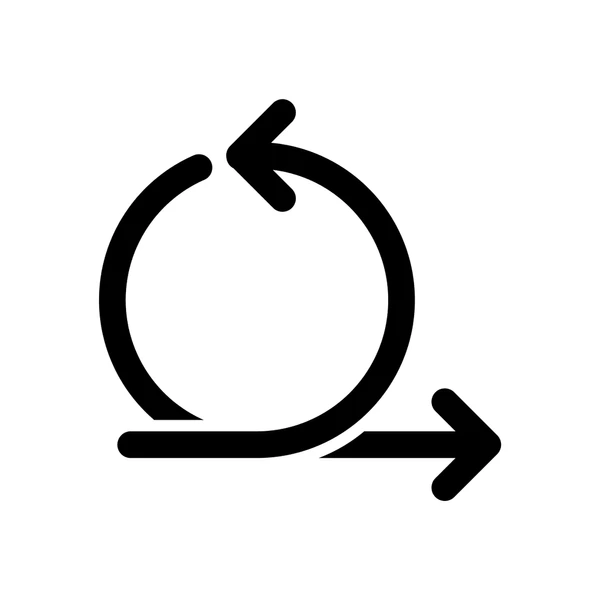
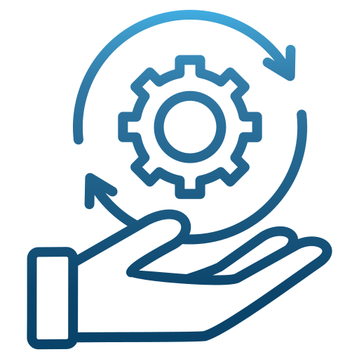

À propos de moi
Je m'appelle Noahn de LACROIX, j’ai 19 ans et je suis actuellement étudiant en Bachelor Universitaire de Technologie (BUT) Informatique à l’IUT d’Orsay, rattaché à l’Université Paris-Saclay. Passionné depuis toujours par l’informatique et les nouvelles technologies, je suis animé par une réelle curiosité et un désir constant d’apprendre. Ce domaine en perpétuelle évolution m’attire par la richesse de ses applications, sa dimension créative, ainsi que les nombreux défis qu’il propose. Je m’efforce chaque jour de renforcer mes compétences, tant sur le plan théorique que pratique, afin de me préparer au mieux aux exigences du monde professionnel.
Je suis à la recherche d'un stage à partir du 20 Avril 2026 de 3 mois dans le domaine du développement web ou mobile en Ile de France ou en Guadeloupe. Avec une possibilité de le réaliser aussi en tant que développeur full/stack. Ce stage permettra d'acquérir des compétences notables dans le monde professionelle
Passionné par le développement web, je souhaite mettre mes compétences techniques au service de projets ambitieux tout en m'impliquant dans leur pilotage. Ma double compétence en développement et en management de projet me permet d'assurer une coordination efficace entre les enjeux techniques et les objectifs stratégiques.
Profil professionnel
Expériences Professionnelles
Stage d'Observation de Troisième
Lieu : Jet d'Encre, Les Abymes, Guadeloupe
Boutique Informatique : Immersion au sein du pôle vente et technique. Accueil des clients, conseil sur le choix de matériels (ordinateurs, solutions d'impression, périphériques) et initiation au diagnostic ainsi qu'à la maintenance de composants informatiques.
Bénévole en Organisation Événementielle
Lieu : Baie-Mahault, Guadeloupe
Missions : Aide logistique à l'installation et à la préparation d'un événement de grande envergure.
Compétences Techniques
Développement Logiciel & Web
Gestion de Données & Web Sémantique
Systèmes, Réseaux & Performance
 Programmation Sockets
Programmation SocketsManagement & Design de Projet

Méthodologies Agiles
Management avancée des SI Outils Excel
Outils ExcelQualités personnelles
Esprit d'analyse et de résolution de problèmes
Capacité à travailler en équipe
Autonomie et curiosité
Organisation d'un projet
Responsabilité
Mes diplômes obtenus
Baccalauréat Général – NSI et Mathématiques
Établissement : Lycée Polyvalent Charles Coeffin, Guadeloupe
Mention : Bien
Description : Cursus général avec spécialités Numérique et Sciences de l'informatique (NSI) et Mathématiques.
BUT Informatique – 2ème année
Établissement : IUT d'Orsay – Université Paris-Saclay
Description : Formation en informatique générale, développement logiciel, réseaux et bases de données.
Statut : En cours
Langues parlées
-
 Français – Maternel
Français – Maternel
-
 Anglais – B1/B2
Anglais – B1/B2
-
 Créole – Courant
Créole – Courant
-
 Espagnol – Notions
Espagnol – Notions
Centres d'intérêt
Football
Pratique en club : 8 ans de pratique (niveau régional). Poste de milieu défensif, axé sur la vision de jeu et l'esprit d'équipe.
Musculation & Fitness
Régularité : Pratique intensive depuis 2 ans (3 séances/semaine). Discipline axée sur le dépassement de soi et la planification d'objectifs.

Histoire & documentation
Type : Analyse des stratégies militaires et des grandes guerres et de l'histoire de la monarchie.

Cuisine
Spécialités : Maîtrise des plats traditionnels antillais (Bokit, Colombo) et méditerranéens. Sens de l'organisation et du dosage précis.

Analyses Sportives
Passion : F1 (stratégies pneumatiques) et NBA (statistiques avancées/sabermetrics). Suivi quotidien de l'actualité tech et sportive.
Jeux Vidéo
Types : Jeux de stratégie, de gestion et multijoueurs coopératifs. Développe l'esprit d'analyse et le travail en équipe.
Certifications
Certification PIX
Évaluation et certification officielle des compétences numériques.
Duolingo English Test
Certification attestant du niveau de maîtrise de la langue anglaise.
Secours Civiques (PSC2)
Formation avancée aux premiers secours en équipe et gestion d'urgence.
Mes Projets Professionnels et personnels
Découvrez mes réalisations dans le domaine informatique
Application de Gestion de Tâches
Outil interactif pour suivre l’avancement de projets personnels ou académiques. L’application permet de créer, modifier et supprimer des tâches, et de les organiser par priorité.
Site Web d'un parc d'attraction virtuel
Développement d’un site web pour un parc d’attractions virtuel nommé Ice Peak Park. Le site présente les attractions, événements et permet une navigation interactive pour les visiteurs.
Jeu Vidéo Algorithmique 2D
Développement d’un jeu vidéo 2D axé sur les algorithmes et la logique. L’objectif était de créer des mécaniques de jeu interactives et stimulantes tout en appliquant les concepts de programmation orientée objet.
Application Cité Internationale Universitaire de Paris
Développement d’une application Java orientée objet pour adapter le site web de la Cité Internationale Universitaire de Paris en une interface interactive. Le projet combine Java Swing pour l’interface et GitHub pour la gestion collaborative.
Application de Création de Groupes pour une Université
Conception et déploiement d'une plateforme universitaire automatisant la répartition des étudiants. Optimisation de la création des groupes via des algorithmes de génération automatique et modélisation d'une base de données relationnelle structurée.
Langage utilisés : PHP, HTML, CSS, Java, PL/SQL, SQL
Site de prise de rendez-vous - AM CUSTOMS
Conception et déploiement d'une plateforme web permettant à la prise de rendez-vous.
Langage utilisés : HTML, CSS, Javascript
Technologies utilisés : ReactJS, NodeJS, VueJS
Contactez-moi
Intéressé par une collaboration ? N'hésitez pas à me contacter